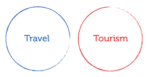

Boolean operators
Some databases and catalogues allow you to combine keywords using Boolean operators (advanced operators).
Select an operator to view the search results.

Truncation and wildcards
Some databases and catalogues also allow you to use truncation and wildcard symbols.
Select a symbol to view the result.
behaviour
*
=
behavioural, behaviours, behaviour.
organi
?
ational behavio
?
r =
organisational, organizational, behaviour, behavior.
Searching for a phrase
Some databases and catalogues allow you to search for phrases.
Select the symbol to view the result.
"
organisational behaviour
"
=
results with the exact words, "organisational behaviour"